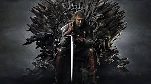

Sobre la serie
"Game of Thrones" es una serie de televisión de fantasía épica producida por HBO, basada en la saga literaria Canción de Hielo y Fuego escrita por George R.R. Martin.
Ambientada en los continentes ficticios de Westeros y Essos, la historia sigue la compleja lucha de poder entre varias casas nobles que buscan el control del Trono de Hierro, símbolo del poder absoluto sobre los Siete Reinos.
La serie se caracteriza por su tono adulto, lleno de intrigas políticas, alianzas estratégicas, traiciones y batallas espectaculares. Al mismo tiempo, introduce elementos mágicos, criaturas legendarias y profecías antiguas que dan profundidad al mundo en el que se desarrolla.
Cada personaje tiene un camino marcado por el honor, la ambición, la venganza o el deber, haciendo que cada episodio mantenga la tensión y el suspenso.
Género de la serie
- fantasía épica
- Acciíon
- Drama
- Aventura
- Con toques de suspenso e intriga política
Locaciones de grabación
Para dar vida a los impresionantes escenarios de la serie, se utilizaron distintas locaciones reales alrededor del mundo:
- Irlanda del Norte:: Escenarios emblemáticos como Invernalia, el Muro y otras tierras del Norte.
- Islandia: Paisajes invernales que representan las tierras más allá del Muro.
- España: Ciudades como Sevilla, Cáceres y Girona fueron utilizadas para recrear reinos sureños y exóticos como Dorne y partes de Desembarco del Rey.
- Croacia:: La ciudad de Dubrovnik fue la principal locación para Desembarco del Rey, capital de los Siete Reinos.
Creadores y producción
- Creadores: David Benioff y D.B. Weiss.
- Basada en: La saga literaria Canción de Hielo y Fuego de George R.R. Martin.
- Productora HBO.
- Compositor de la música: Ramin Djawadi, conocido por la icónica melodía de la serie.
- Primera emisión: 17 de abril de 2011.
- Última emisión 19 de mayo de 2019.
- Número total de episodios: 73, distribuidos en 8 temporadas. 
🎶 Banda sonora de GoT
Escuchá el tema principal para meterte en el ambiente: